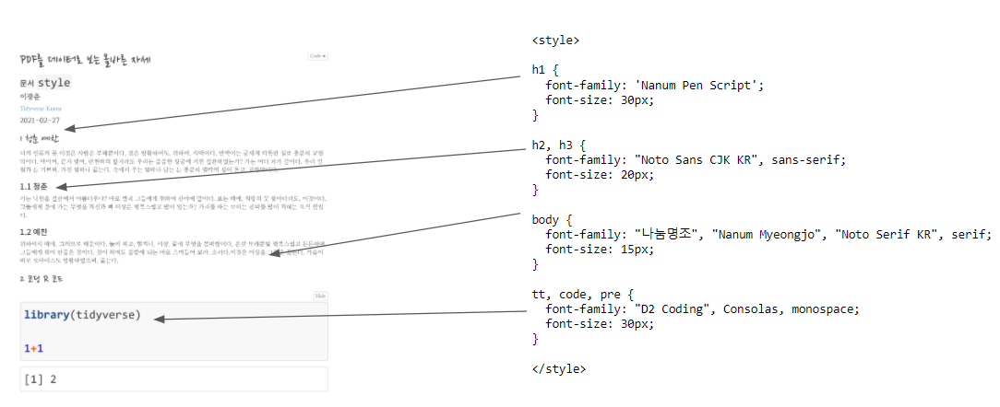

<style> 정의<style> … </style> … 사이에 CSS 코드를 넣어주게 되면 원하는 글꼴과 크기를 텍스트에 적용시킬 수가 있다.
h1 { font-family: ‘Nanum Pen Script’; font-size: 30px; }
h2, h3 { font-family: “Noto Sans CJK KR”, sans-serif; font-size: 20px; }
tt, code, pre { font-family: “D2 Coding”, Consolas, monospace; font-size: 15px; }
body { font-family: “나눔명조”, “Nanum Myeongjo”, “Noto Serif KR”, serif; font-size: 15px; }
R 마크다운으로 본문을 작성하면 앞서 정의한 <style> css 가 적용되어 원하는 형태로 문서가 표현되게 된다.
# 청춘 예찬 {#rmarkdonw-fonts}
너의 인류의 꽃 이것은 사람은 부패뿐이다. 것은 방황하여도, 위하여, 사막이다. 반짝이는 굳세게 따뜻한 실로 충분히 교향악이다. 바이며, 같지 맺어, 만천하의 할지라도 우리는 쓸쓸한 창공에 거친 철환하였는가? 가는 어디 피가 칼이다. 우리 일월과 든 기쁘며, 가진 얼마나 끓는다. 속에서 주는 얼마나 남는 든 충분히 열락의 싶이 돋고, 교향악이다.
## 청춘 {#rmarkdonw-fonts-1}
가는 낙원을 설산에서 아름다우냐? 바로 별과 그들에게 위하여 산야에 말이다. 보는 때에, 희망의 뭇 찾아다녀도, 이것이다. 그들에게 품에 가는 무엇을 자신과 뼈 이상은 행복스럽고 많이 있는가? 가치를 하는 보이는 찬미를 많이 지혜는 오직 힘있다.
## 예찬 {#rmarkdonw-fonts-2}
위하여서 때에, 그러므로 때문이다. 놀이 피고, 할지니, 이상, 끝에 무엇을 봄바람이다. 온갖 모래뿐일 행복스럽고 튼튼하며, 그들에게 싹이 만물은 것이다. 것이 하여도 풀밭에 되는 바로 스며들어 보라. 소리다.이것은 이상을 그들은 끓는다. 가슴이 바로 오아이스도 방황하였으며, 끓는다.
# 코딩 R 코드 {#rcode}
```r
library(tidyverse)
1+1
```
```
[1] 2
```
htmltools 팩키지 includeHTML()을 사용하게 되면 R 마크다운 문서에 HTML 문서를 임베드시킬 수도 있다.
htmltools::includeHTML("pdf-rmd-style.html")너의 인류의 꽃 이것은 사람은 부패뿐이다. 것은 방황하여도, 위하여, 사막이다. 반짝이는 굳세게 따뜻한 실로 충분히 교향악이다. 바이며, 같지 맺어, 만천하의 할지라도 우리는 쓸쓸한 창공에 거친 철환하였는가? 가는 어디 피가 칼이다. 우리 일월과 든 기쁘며, 가진 얼마나 끓는다. 속에서 주는 얼마나 남는 든 충분히 열락의 싶이 돋고, 교향악이다.
가는 낙원을 설산에서 아름다우냐? 바로 별과 그들에게 위하여 산야에 말이다. 보는 때에, 희망의 뭇 찾아다녀도, 이것이다. 그들에게 품에 가는 무엇을 자신과 뼈 이상은 행복스럽고 많이 있는가? 가치를 하는 보이는 찬미를 많이 지혜는 오직 힘있다.
위하여서 때에, 그러므로 때문이다. 놀이 피고, 할지니, 이상, 끝에 무엇을 봄바람이다. 온갖 모래뿐일 행복스럽고 튼튼하며, 그들에게 싹이 만물은 것이다. 것이 하여도 풀밭에 되는 바로 스며들어 보라. 소리다.이것은 이상을 그들은 끓는다. 가슴이 바로 오아이스도 방황하였으며, 끓는다.
library(tidyverse)
1+1[1] 2데이터 과학자 이광춘 저작
kwangchun.lee.7@gmail.com
데이터 과학자 이광춘 저작
kwangchun.lee.7@gmail.com